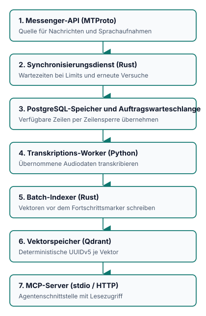

Messenger-Archiv und semantische Suche
Suche nach Inhalten in Textnachrichten und transkribierten Audiodateien eines privaten Nachrichtenarchivs.
Eigenständiges persönliches Projekt. Das Diagramm zeigt Softwarekomponenten. Es enthält keine Beispielnachrichten oder Kontodaten.
Technische Details
- Technischer Kontext
- Das persönliche Projekt trennt Import, Transkription und Indexierung, damit jeder Schritt einzeln wiederholt werden kann.
- Architektur
- Rust importiert Nachrichten über MTProto. PostgreSQL speichert Datensätze und Transkriptionsaufträge. Ein Python-Worker führt Whisper aus. Ein Rust-Indexer speichert Embeddings in Qdrant. Eine MCP-Schnittstelle stellt die Suche bereit.
- Technische Herausforderungen
- Parallele Worker können auf Aufträge stoßen, die bereits von einem anderen Worker übernommen wurden.
- Der Vektorspeicher und der Fortschrittsmarker des Indexers liegen in getrennten Systemen.
- Entwurfsentscheidungen
- PostgreSQL-Zeilensperren mit FOR UPDATE SKIP LOCKED ermöglichen es Workern, konkurrierend gesperrte Zeilen zu überspringen.
- Jeder Vektor-Upsert verwendet eine deterministische UUIDv5.
- Der Indexfortschritt wird erst nach erfolgreichem Schreiben des Vektors weitergesetzt.
- Zuverlässigkeit
- Ein erneuter Versuch kann den Vektor unter derselben ID erneut schreiben. Andere Seiteneffekte erfordern eine eigene Deduplizierung.
- Ein Absturz zwischen Verarbeitungsschritten kann Arbeit zur Wiederholung hinterlassen. Der Fortschritt wird nach jedem abgeschlossenen Schritt gespeichert.
- Funktionen des Projekts
- Bündelt die Suche in Nachrichten und Transkripten in einer MCP-Schnittstelle.
Technologien
- Rust
- Python
- MTProto
- PostgreSQL
- Whisper
- Qdrant
- MCP
